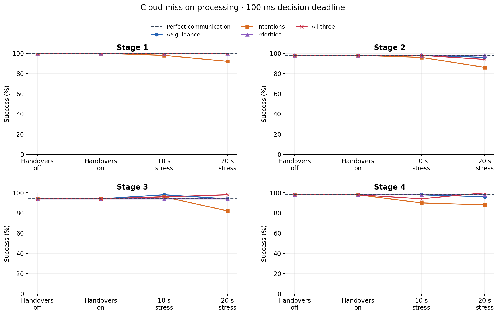
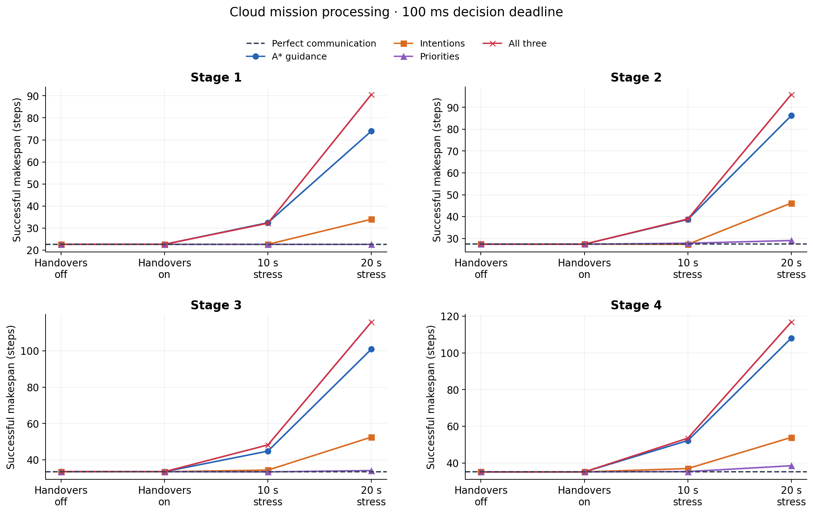
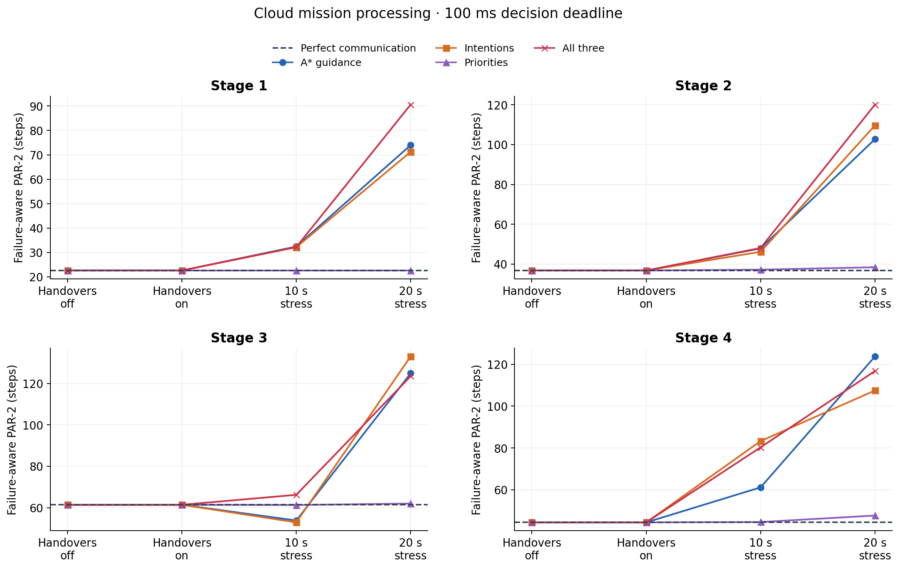
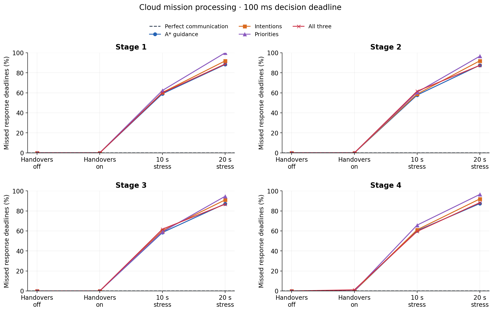
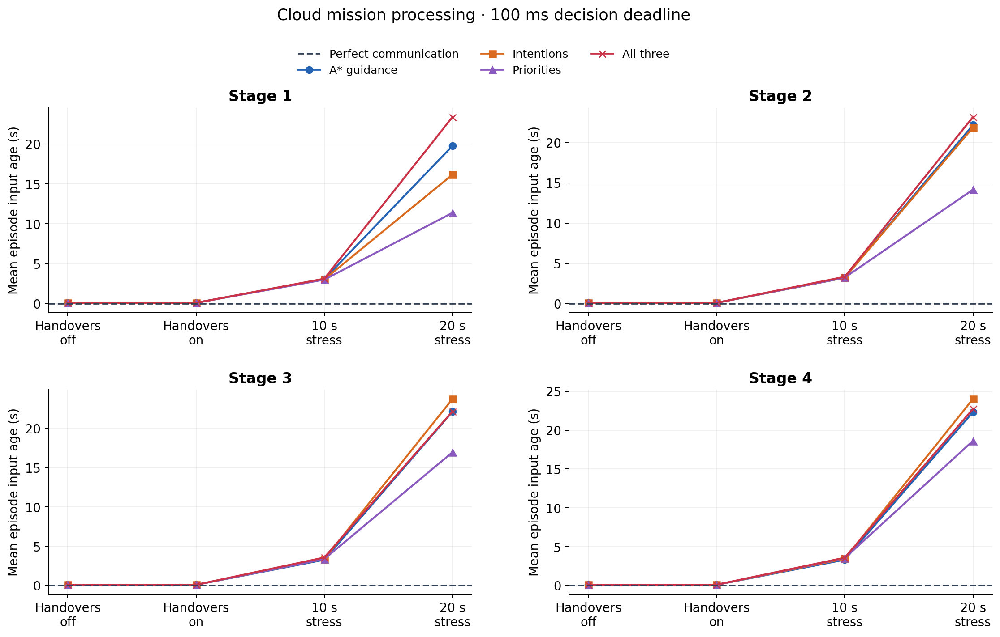
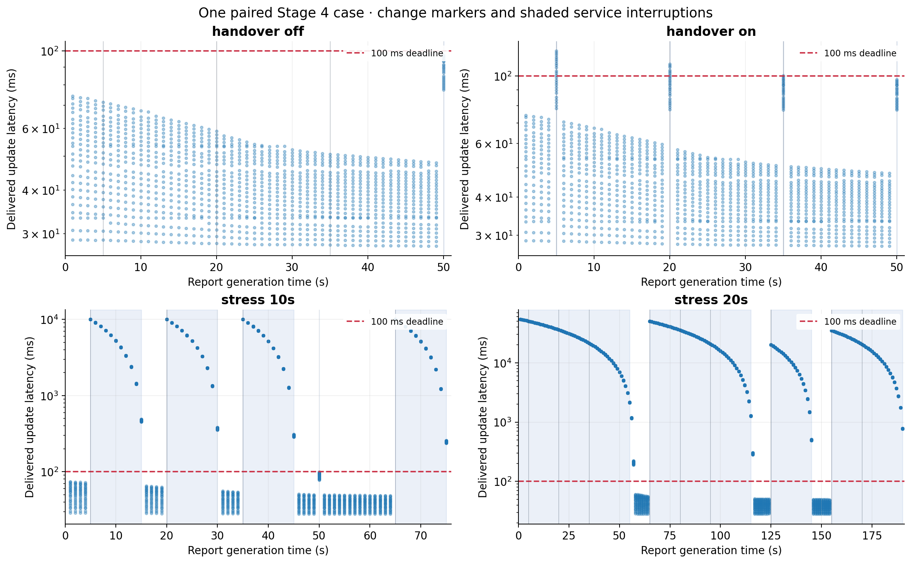

50 paired cases per stage, one qualified frozen baseline. Satellite-change interruptions are switched off/on; resource reconfiguration and ordinary transport stay fixed. The 10/20-second durations are explicit artificial stress tests.






Successful makespan excludes failures. PAR-2 retains them as 500 steps. Per-stage summaries include paired comparisons against both Perfect and handovers off. Messages arriving after a deadline remain timestamped and can be used at a later decision.